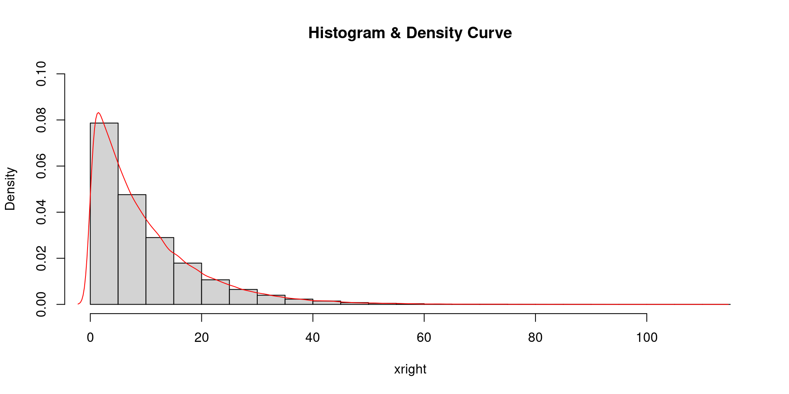
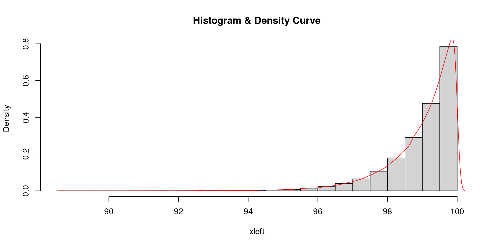
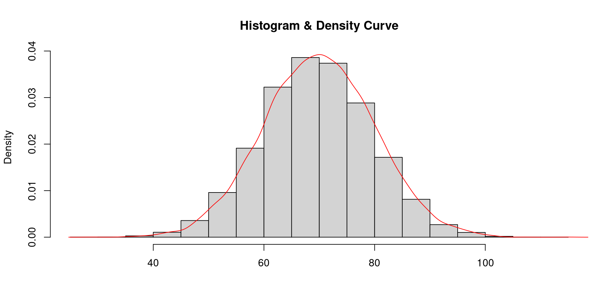

Moments, Skewness & Kurtosis
Abdullah Al Mahmud
Invalid Date
Why?
- Have you heard about moments?
- Why are they Used?
Revisit Histogram

Moments
Can uniquely characterize a distribution
Central Moments
Central Moments: \(\mu_r=\frac{\sum(x_i-\bar x)^r}{n}\)
- \(\mu_1=\frac{\sum(x_i-\bar x)}{n}=\frac{\sum x_i}{n}-\frac{n \bar x}{n}=\frac{n \bar x}{n}-\frac{n \bar x}{n}=0\)
- \(\mu_2=\frac{\sum(x_i-\bar x)^2}{n}=\sigma^2\)
- \(\mu_3=\frac{\sum(x_i-\bar x)^3}{n}\)
- \(\mu_4=\frac{\sum(x_i-\bar x)^4}{n}\)
- For grouped data: \(\mu_r=\frac{\sum f_i(x_i-\bar x)^r}{n}\)
Raw Moments
\(\mu_r'=\frac{\sum(x_i-a)^r}{n}\); a is arbitrary number
\(\mu_1'=\frac{\sum(x_i-a)}{n}=\frac{\sum x_i}{n}-\frac{na}{n}=\bar x-a\)
Value of 1st Central Moment
\(\displaystyle \mu_1=\frac{\sum (x_i-\bar x)}{n}=\frac{\sum x_i}{n}=\bar x - \bar x = 0\)
Binomial Formula from Pascal Triangle

Coefficients using the triangle
- \((a+b)^1 = a + b\)
- \((a+b)^2 = a^2 + 2ab + b^2\)
- \((a+b)^3=a^3+3a^2b+3ab^2+b^3\)
- \((a+b)^4=a^4+4a^3b+6a^2b^2+4ab^3+b^4\)
Changing Origin of Moments
From \(\mu_r'(a)\) to \(\mu_r'(k)\)
Assume, \(a^r = \mu_r'(a)\), \(b = a - k\)
Binomial Formulae
- \((a+b)^1 = a + b\)
- \((a+b)^2 = a^2 + 2ab + b^2\)
- \((a+b)^3=a^3+3a^2b+3ab^2+b^3\)
- \((a+b)^4=a^4+4a^3b+6a^2b^2+4ab^3+b^4\)
- \(\mu_1'(k) = \mu_1'(a) + b\)
- \(\mu_2'(k) = \mu_2'(a) + 2 \mu_1'(a)b + b^2\)
- ?
- ?
Central Moments from Raws
Use \(k = \bar x\)
That’s it! DO NOT MEMORIZE!
2nd Central Moment
\(\mu_2=\mu_2' - \mu_1'^2\)
- \(\mu_2=\mu_2'(a)+2\mu_1'(a)(a-\bar x)+(a-\bar x)^2\) [From here]
- \(\mu_2'-2(a-\bar x)^2+(a-\bar x)^2\) [since \(\mu_1'(a) = \bar x-a\)]
- \(\mu_2'-(a-\bar x)^2\)
- \(\mu_2' - \mu_1'^2\)
Chracteristics of Moments
- Used for testing for symmetry, normality, and skewness
- First raw moment around zero is Arithmetic Mean (\(\mu_1'=\frac{\sum (x_i)}{n}=\bar x\))
- Second central moment is equal to variance (\(\sigma^2 = \frac{\sum (x_i-\bar x)^2 )}{n}\))
- 2nd and 3rd central moments are used to measure skewness (detailed later)
- 2nd and 4th central moments are used to measure kurtosis
Can Moments Be Negative?
\(\displaystyle \mu_r = \frac{\sum(x_i-\bar x)^r )}{n}; r=1,2,3, \cdots\)
- 0 if all values are equal to origin
- Negative if r is an Odd number
- Positive if r is Even number
Skewness
Lack of symmetry

- +Ve Skew \(\rightarrow \bar X \gt Me \gt Mode\)
- -Ve Skew \(\rightarrow \bar X \lt Me \lt Mode\)
- No Skew \(\rightarrow \bar X = Me = Mode\)
Positive Skewness
- Low values have high frequency
- High values have low frequency
- As the value increases, the frequency decreases
Most students score low, very few get good scores.
Negative Skewness

- Low values have low frequency
- High values have high frequency
- As the value increases, so does the frequency
Very few students get low marks, most get high marks.
Symmetric

- Average values have maximum frequency
- Low values have low frequency and high values have high frequency
- As the value go farther from mean, their frequency gradually decreases.
Kurtosis

Normal distribution \(\rightarrow\)
- Most students get average marks
- Higher and lower marks are obtained by lesser number of students
Kurtosis Misconception
Kurtosis is NOT a degree of peakedness. Learn more
Measures of SKewness
Pearson’s Coefficient: \(SK_P=\frac{Mean-Mode}{\sigma}=\frac{3(Mean-Median)}{\sigma} ;(-3,3)\)
(\(Mode=3Me-2\bar X\))
- Bowley’s Coefficient: \(SK_B=\frac{Q_3+Q_1-2Me}{Q_3-Q_1}; (-1,1)\)
- Kelly’s Coefficient: \(SK_k=\frac{D_1+D_9-2Me}{D_9-D1}\)
- Method of Moments: \(\beta_1=\frac{\mu_3^2}{\mu_2^3}\)
Estimate Skewness
4, 23, 55, 70, 74, 78, 86, 89
Skewness Working Formula
Coefficient of skewness, \(\gamma_1 = \sqrt{\beta_1} = \sqrt{\frac{\mu_3^2}{\mu_2^3}} = \frac{\mu_3}{\sqrt{\mu_2^3}}\)
If \(\gamma_1 < 0 \rightarrow\) Negative Skew
If \(\gamma_1 > 0 \rightarrow\) Positive Skew
If \(\gamma_1 = 0 \rightarrow\) No Skew (Symmetric Distribution)
Measures of Kurtosis
- Pearsons’s Coefficient of Moments, \(\beta_2 = \frac{\mu_4}{\mu_2^2}\)
- Percentile Coefficient, \(K=\frac{\frac 1 2 (Q_3-Q_1)}{P_{90}-P_{10}}\)
Kurtosis Working Formula
\(\gamma_2=\beta_2-3\)
\(\gamma_2=0 \space or \space \beta_2=3) \rightarrow\) Mesokurtik \(\gamma_2\gt0 \space or \space \beta_2 \gt 3) \rightarrow\) Leptokurtik \(\gamma_2\lt0 \space or \space \beta_2\lt3) \rightarrow\) Platykurtik
9, 7, 8, 6 \(\rightarrow\) Find kurtosis
Five Number Summary
- Minimum
- Maximum
- Quartiles: \(Q_1, Q_2, Q_3\)
- \(Q_1 - X_L<X_H-Q_3 \rightarrow\) Positive Skew
- \(Q_1 - X_L>X_H-Q_3 \rightarrow\) Negative Skew
Example of Five Number Summary
2, 1, 0, 5, -6, 7, -4
Solution
| Minimum | \(Q_1\) | \(Q_2\) | \(Q_3\) | Maximum |
|---|---|---|---|---|
| -6 | -4 | 1 | 5 | 7 |
Box and Whisker Plot

Problems
Misc
- \(\bar X = 65, Me = 70, SK_P = -0.5\); Mod = ? CV = ?
- GM & HM of quartiles of a symmetrical distribution are 8 and 6.4, respectively. Find median.
- Mean, SK(P), coefficient of skewness and CV of distribution are 50, 0.4, and 40%, respectively. Find SD, mode, & median.
- Variance of a mesokurtik distribution is 4. Find \(\mu_4\).
Skewness Problems
\(\bar X = 400, CV = 8\%\), and \(SK_P = 0.40\).
Find Mode and Median.
Moments Conversion Problems
- First three moments about 2 are 1, 16, and -40, , respectively. Find them about 0.
- First four moments about 5 are 2, 20,40, and 50, respectively. Find the central moments.
- First three moments about 2 are -1, 6, and 30, respectively. Find them about 5.
- 3, 24, 76
- 0, 16, -64, 162
- -4, 21, -78
Story: Statistical Father!
Background
Year: 1946
Maj Hadlam (British Army)
- Son born 349 Days after departure
- Usual gestational period: 9 Months 10 Days = 280 Days
- Sued
- Verdict: He is the Father!
- Other instances: 340 (Father Lost), 331 (Father Won)
Study

Sample: 13634 Female individuals
Mean duration: 280 days
- Highest Duraion: 360 Days

docs.statmania.info | Abdullah Al Mahmud